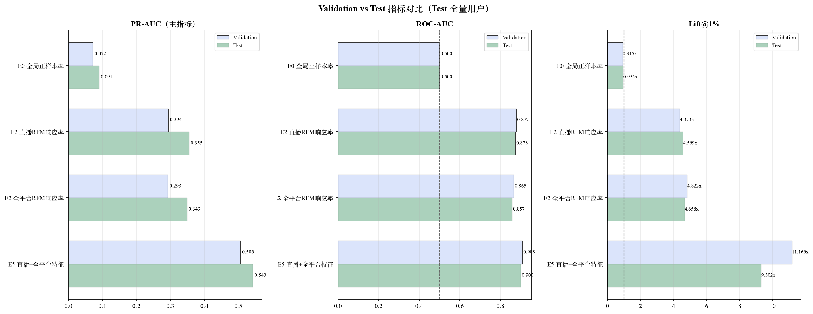
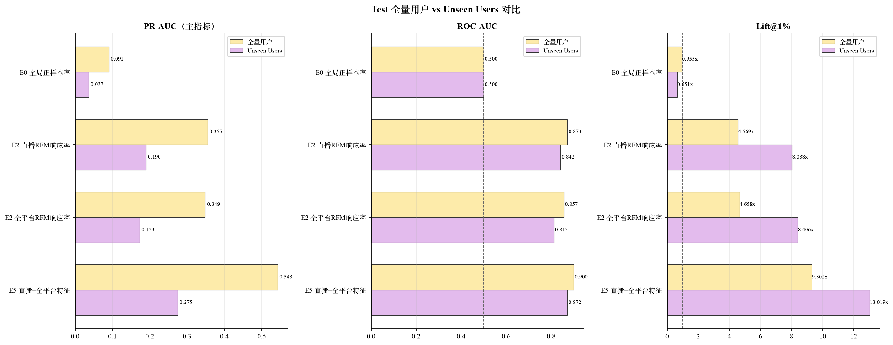
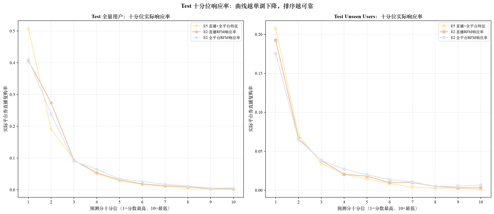
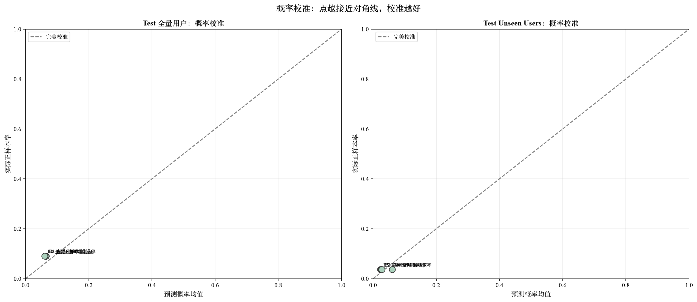
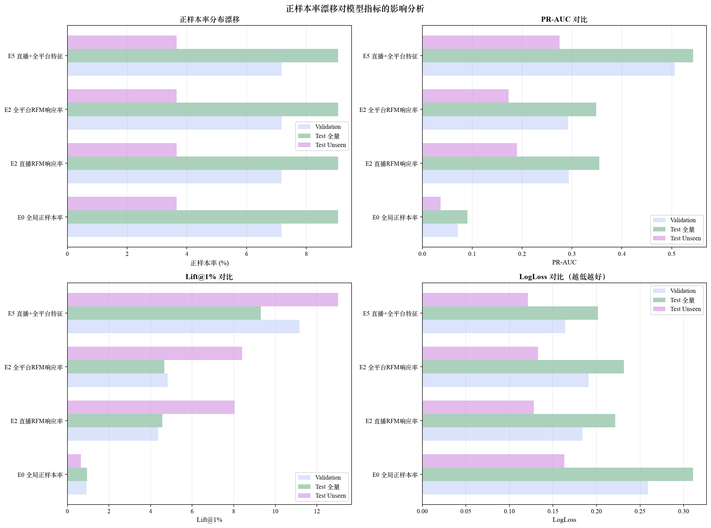

Test Review - Response 模型评估报告
运行 ID：20260825_162323
Test 执行时间：基于已冻结数据，未重新运行
评估范围：全量用户 (All Users) + 未见用户 (Unseen Users)
一、核心结论
- 最佳模型 E5 直播+全平台特征 在 Test 全量用户上 PR-AUC=0.5427，优于 Validation 的 0.5065。
- Test 正样本率 (9.06%) 高于 Validation (7.18%)，PR-AUC 的提升需结合该基础率变化解释，不能单独视为泛化提升。
- Unseen Users 正样本率为 3.66%，PR-AUC=0.2749；由于 PR-AUC 强依赖基础率，应结合 ROC-AUC、Lift 和十分位梯度综合判断。
- Lift@1% 在 Test 全量用户上为 9.30x，低于 Validation 的 11.17x；但 Top 1% 实际命中率达到 84.30%。
- 正样本率升高通常会抬高随机基线 PR-AUC；Lift 已除以基础正样本率，不会天然随基础率升高，LogLoss/Brier 则同时反映区分能力与概率校准。
关于正样本率漂移的影响：
• Test 正样本率 (9.06%) 高于 Validation (7.18%)，会抬高随机基线 PR-AUC，需结合 ROC-AUC 与 Lift 判断
• Lift 是头部命中率相对本集合基础率的倍数，不会因为正样本率更高而天然变高
• Unseen Users 正样本率 (3.66%) 显著低于全量，应重点结合 ROC-AUC、Lift 和十分位梯度评价，而非直接比较 PR-AUC 绝对值
• LogLoss/Brier 同时受基础率和概率校准影响，跨人群比较时需谨慎
• 建议在实际部署时，根据目标人群的正样本率重新校准阈值
二、最佳模型 Test 表现
PR-AUC (全量): 0.5427
PR-AUC (Unseen): 0.2749
Lift@1% (全量): 9.30x
Lift@1% (Unseen): 13.02x
三、Validation vs Test 指标对比
对比各实验在 Validation 和 Test 上的表现，观察泛化能力。

四、全量用户 vs Unseen Users 对比
Unseen Users 是指训练/验证集中未出现过的用户，用于评估模型对新用户的泛化能力。

五、Test 十分位响应率
十分位曲线越单调下降，说明模型排序越可靠。左图为全量用户，右图为 Unseen Users。

六、概率校准分析
点越接近对角线，说明预测概率与实际发生率越一致。校准良好的模型更适合用于概率估计。

七、正样本率漂移影响
正样本率的变化会直接影响 PR-AUC、Lift 和 LogLoss 的解释。

八、完整指标明细
| 实验 |
Val 正样本率 |
Test 正样本率 (全量) |
Test 正样本率 (Unseen) |
Val PR-AUC |
Test PR-AUC (全量) |
Test PR-AUC (Unseen) |
Test Lift@1% |
| E0 全局正样本率 | 7.18% | 9.06% | 3.66% | 0.0718 | 0.0906 | 0.0366 | 0.95x |
| E2 全平台RFM响应率 | 7.18% | 9.06% | 3.66% | 0.2925 | 0.3487 | 0.1729 | 4.66x |
| E2 直播RFM响应率 | 7.18% | 9.06% | 3.66% | 0.2936 | 0.3548 | 0.1900 | 4.57x |
| E5 直播+全平台特征 | 7.18% | 9.06% | 3.66% | 0.5065 | 0.5427 | 0.2749 | 9.30x |
九、部署建议
- 最佳模型 E5 直播+全平台特征 通过时间外 Test 验收，具备进入下一阶段离线阈值和业务策略评审的条件
- 当前仅证明相关性排序能力，尚不能直接证明发券增量收益；正式上线仍需下一阶段随机实验或 uplift/因果评估
- 部署时需要根据实际正样本率调整阈值，建议使用 Lift 曲线辅助决策
- 定期监控模型效果，如发现正样本率漂移，需要重新训练或校准
十、文件位置
- Test 指标：
/Users/yukewei/Public/xhs/券敏感人群第一阶段/outputs/20260825_162323/test/test_metrics.csv
- Test 预测：
/Users/yukewei/Public/xhs/券敏感人群第一阶段/outputs/20260825_162323/test/test_predictions.csv
- 十分位明细：
/Users/yukewei/Public/xhs/券敏感人群第一阶段/outputs/20260825_162323/test 下各 *_deciles.csv